Alternative App Store for macOS
powered by Homebrew Cask
brew install yanbab/tap/appfinder
Fast, private, and powered directly by the open Homebrew ecosystem
Browse, search, and install thousands of apps and typography packages without memorizing CLI formula names.
Keep your entire software stack fresh with instant background change detection and 1-click batch upgrades.
Deep-clean applications and wipe leftover preferences, caches, and Application Support files with Homebrew --zap.
Zero tracking, no account logins, and no cloud lock-in. Fast local caching delivers instant sub-millisecond search.